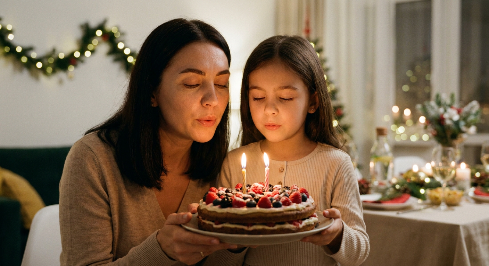
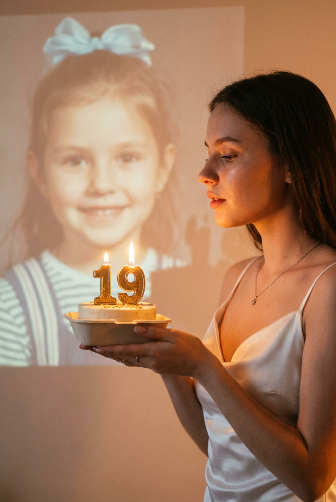
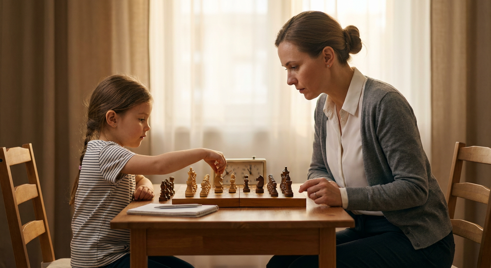
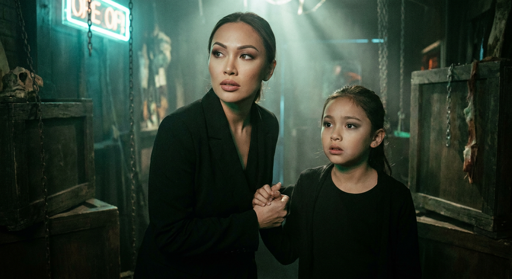
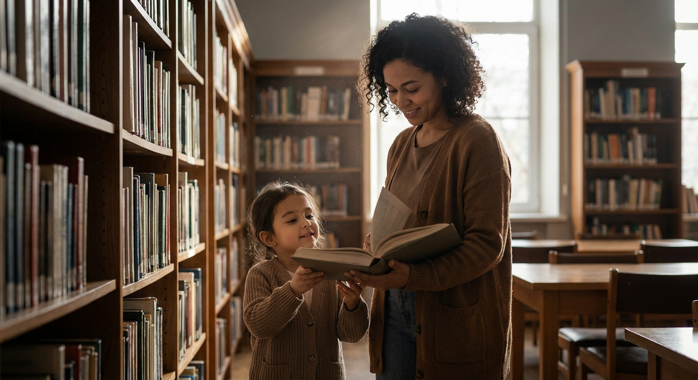
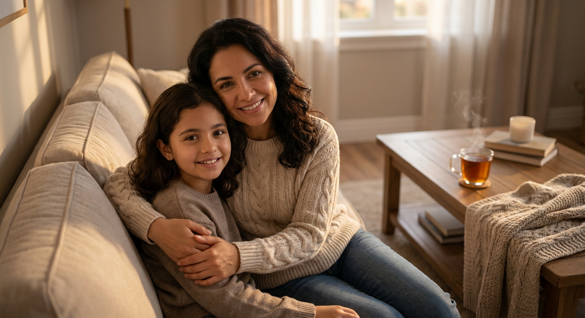
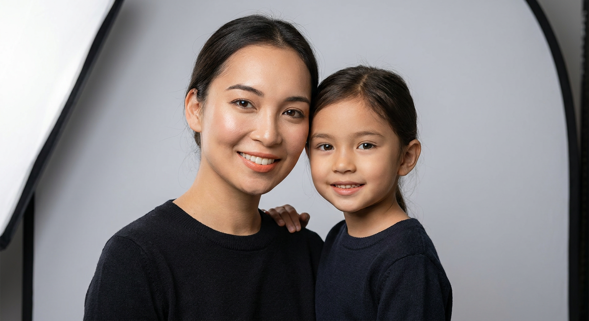
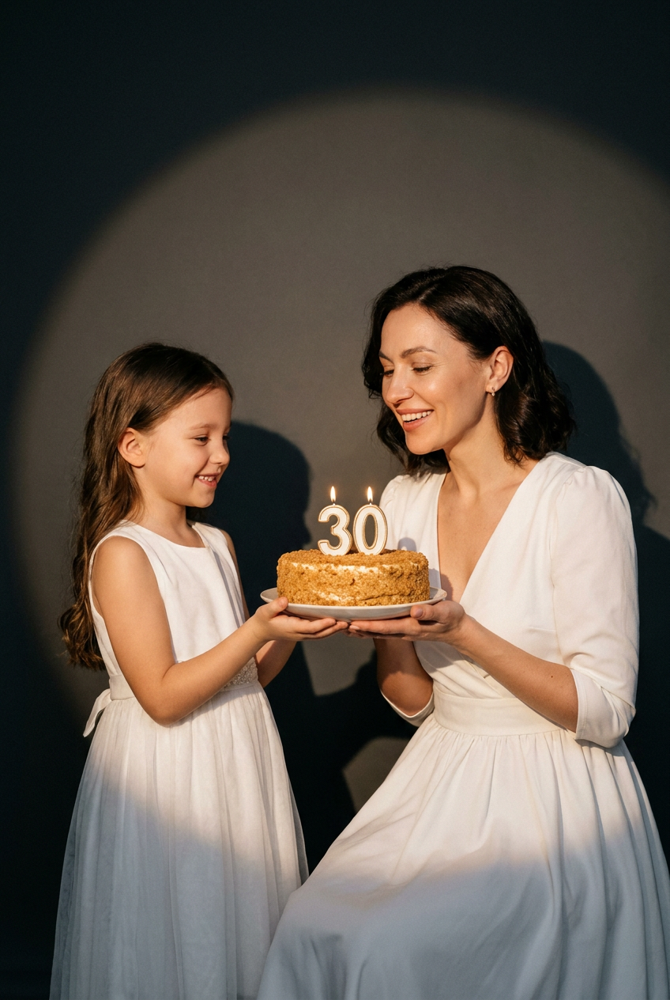

ИИ-фото с маленькой собой: 8 промптов для нейросети

Снимка рядом с собой в детстве обычно не хватает не из-за камеры, а потому что такого момента никогда не было. Генерация помогает собрать его из знакомых черт лица, подходящего масштаба и эмоциональной сцены.
В подборке — 8 промптов для разных сюжетов: день рождения, шахматная партия, библиотека, страшный квест, прогулка в парке, встреча на рассвете и тёплый домашний кадр. Их можно использовать как основу и адаптировать под свой референс.
Как сгенерировать такое фото: пошагово
Нужен снимок анфас при ровном свете, лицо в кадре целиком, без тёмных очков и головных уборов. Разрешение от 1000 пикселей по короткой стороне. Чем чётче исходник, тем точнее модель повторит черты.
Выберите сценарий ниже и нажмите «Копировать» — текст уйдёт в буфер целиком, вместе с командой сохранения внешности. Эта команда стоит первой строкой и отвечает за то, чтобы на выходе было ваше лицо, а не случайное.
Кнопка «Сгенерировать» рядом с каждым промптом открывает модель в новой вкладке. Nano Banana Pro работает с референсом лица — в отличие от моделей, которые генерируют портрет с нуля и узнаваемость теряют.
Промпт — в поле ввода, портрет — через загрузку референса. Порядок значения не имеет, но без референса команда сохранения внешности работать не будет: модели нечего сохранять.
Для сторис и ленты берите 9:16, для превью и обложек — 4:3. Первый результат редко идеален: если поза или свет ушли не туда, поправьте соответствующую часть промпта и запустите заново. Обычно хватает двух-трёх итераций.
8 промптов для генерации
1. Праздничный торт вместе
Строго сохранить внешность по загруженному референсу: черты лица, пропорции, мимику и текстуру кожи без изменений. Фотореалистичный кадр, где взрослая версия меня стоит рядом со мной в детстве. Мы выглядим как один человек в разном возрасте: одинаковые черты лица, форма глаз, бровей, носа, губ и овал лица, но естественная разница между взрослой и настоящим ребёнком. Мы вместе держим праздничный торт, взрослая поддерживает его двумя руками или аккуратно направляет руки ребёнка. Масштаб фигур и расстояние между ними правдоподобны, обе версии находятся в одном пространстве. Домашний праздник: сервированный стол, гирлянды, мягкое тёплое освещение и лёгкое боке на заднем плане. На переднем плане торт с гладкой глазурью, одной-тремя крупными горящими свечами, ягодами, шоколадной крошкой или конфетти. Натуральная мимика, реалистичная кожа, точные пропорции, документальная семейная фотография, высокая детализация, мягкие тени, объектив 50 мм, диафрагма f/2.
2. Двойная экспозиция дня рождения

Строго сохранить внешность по загруженному референсу: черты лица, пропорции, мимику и текстуру кожи без изменений. Кинематографичный сюрреалистичный birthday-кадр с эффектом двойной экспозиции. В центре или справа вертикального изображения стоит молодая женщина в профиль, повернувшись вправо, и с задумчивой мягкой улыбкой смотрит на маленький торт со свечой. На ней белое платье на тонких бретелях из сатина или вискозы, минималистичный праздничный образ и небольшая серебристая цепочка с холодной подвеской. В руках она держит тарелку с тортом, на котором горит свеча с металлическим декором и цифрами «19» золотистого или бронзового цвета. Пламя даёт тёплые блики на лице и пальцах. На стене слева и позади проявляется призрачная проекция её детской версии: ребёнок смотрит на взрослую себя или повторяет направление взгляда. Тёплый золотисто-персиковый свет, пастельная палитра, мягкое размытие, лёгкая плёночная зернистость, воздушная стилизованная фотосъёмка, вертикальный кадр 4:5.
3. Шахматы с собой

Строго сохранить внешность по загруженному референсу: черты лица, пропорции, мимику и текстуру кожи без изменений. Фотореалистичная домашняя фотография: взрослая я и моя маленькая версия сидим друг напротив друга за столом и играем в шахматы. Черты лица у обеих совпадают, включая форму глаз, бровей, носа, губ и овал лица, при этом взрослая выглядит взрослой, а ребёнок — настоящим ребёнком с естественными пропорциями. Между нами лежит деревянная шахматная доска с реалистичными клетками и фигурами. Маленькая версия только что делает ход: её рука нависает над выбранной фигурой, а взрослая внимательно смотрит на позицию и готовит следующий ход. Взрослая одета в аккуратном формальном или учительском стиле: строгая блузка либо рубашка, собранная причёска, сдержанный образ. На столе допустим небольшой блокнот, линейка или шахматные часы, но без лишнего реквизита. Атмосфера спокойной концентрации, мягкий свет из окна, натуральные тени, реалистичные материалы, объектив 50 мм, фокус на лицах и доске.
4. Страшный квест вдвоём

Строго сохранить внешность по загруженному референсу: черты лица, пропорции, мимику и текстуру кожи без изменений. Фотореалистичный кадр из страшного квеста: взрослая я стоит рядом с собой в детстве внутри мрачной комнаты. У обеих одинаковые индивидуальные черты лица и узнаваемая внешность, но возраст и рост различаются правдоподобно. Взрослая выглядит собранной и азартной, без паники, а ребёнку страшно, хотя происходящее его явно интересует. Обе смотрят не в объектив, а на пугающий объект за пределами кадра. У взрослой ровный тон кожи, лёгкий хайлайт, ухоженные брови, подводка и тушь, мягкий smoky eyes, нюдовая или розово-бежевая помада с аккуратным контуром губ. Интерьер квест-комнаты: тёмные стены, старые двери, верёвки, цепи, реалистичный хоррор-реквизит, холодные оттенки, слабый неон, тусклые лампы и лёгкая дымка. Кинематографичный боковой свет, глубокие тени, высокая детализация кожи и фактур, объектив 35 мм, диафрагма f/1.8, резкость на лицах.
5. Книга из детства

Строго сохранить внешность по загруженному референсу: черты лица, пропорции, мимику и текстуру кожи без изменений. Фотореалистичная сцена в библиотеке: взрослая версия меня стоит рядом со мной маленькой, и обе выглядят как один человек в разном возрасте. Сходство лица должно быть точным: одинаковые глаза, брови, нос, губы, овал лица, естественная мимика и реалистичные пропорции. Взрослая держит раскрытую книгу перед собой или помогает ребёнку выбрать издание с полки. Маленькая тянется к страницам либо держит собственную книжку. Мы внимательно смотрим на текст и слегка улыбаемся. Вокруг высокие книжные стеллажи, читальные столы и спокойная библиотечная атмосфера. Мягкий рассеянный свет проникает в помещение, в его лучах заметны отдельные пылинки. Книги на заднем плане слегка размыты естественным боке. Одежда повседневная и аккуратная, без ярких логотипов. Тёплые натуральные цвета, реалистичная бумага и дерево, высокая детализация кожи, объектив 50 мм, f/2, малая глубина резкости.
6. Прогулка в зелёном парке

Строго сохранить внешность по загруженному референсу: черты лица, пропорции, мимику и текстуру кожи без изменений. Обычная фотореалистичная фотография на улице: взрослая я держу за руку свою маленькую версию — ребёнка или подростка — и мы идём по ухоженному зелёному парку. У обеих идентичная внешность и совпадающие индивидуальные черты: форма глаз, бровей, носа, губ и овал лица, но возраст читается естественно. Взрослая спокойно улыбается, маленькая версия радостно смотрит прямо в камеру. Фигуры стоят рядом в одном пространстве, рост и перспектива согласованы, без эффекта наклеенных персонажей. На фоне зелёные деревья, дорожка и мягко размытый парк. Тёплый дневной свет, натуральные тени, естественные цвета кожи и одежды, высокая детализация, реалистичная текстура волос. Съёмка на полнокадровую камеру, объектив 35 мм, диафрагма f/1.8, shallow depth of field, sharp focus на лицах, ультрареалистичный стиль, без лишних людей и искусственных элементов.
7. Встреча на рассвете

Строго сохранить внешность по загруженному референсу: черты лица, пропорции, мимику и текстуру кожи без изменений. Фотореалистичная эмоциональная сцена встречи взрослой меня с маленькой версией на рассвете. Мы находимся в одной открытой локации — набережной, поле или тихом природном парке. Взрослая протягивает ребёнку руку, словно впервые его встречает, либо мягко обнимает его. Маленькая версия подходит навстречу, между ними доверие и спокойная радость. Лица узнаваемо совпадают: одинаковая форма глаз, бровей, носа, губ и овал лица, с естественной разницей возраста. На горизонте восходит солнце, вокруг лёгкая дымка, небо плавно переходит от розового к оранжевому. Тёплый золотой контровой свет подсвечивает волосы и плечи, мягкое сияние окутывает фигуры, но лица остаются различимыми. Реалистичный масштаб, натуральные позы, деликатные тени, кинематографичная цветокоррекция, объектив 35 мм, f/2, вертикальный кадр 4:5.
8. Домашние объятия

Строго сохранить внешность по загруженному референсу: черты лица, пропорции, мимику и текстуру кожи без изменений. Тёплая фотореалистичная домашняя фотография: взрослая версия меня сидит или стоит рядом с маленькой мной и обнимает её, держит за руку или прижимает к себе. Мы смотрим в камеру и улыбаемся, создавая ощущение близости и семейного уюта. Черты лица совпадают максимально естественно — одинаковые глаза, брови, нос, губы и овал лица, без изменения индивидуальной внешности; взрослая выглядит взрослой, ребёнок — настоящим ребёнком. На фоне уютная гостиная с диваном, пледом и подушками, рядом на небольшом столике стоит чашка чая. Интерьер реалистичный, мягкие нейтральные цвета, аккуратные бытовые детали без постановочной искусственности. Освещение тёплое дневное или мягкое домашнее, естественные тени, натуральная детализация кожи и ткани, спокойная цветокоррекция. Съёмка на объектив 35 мм, диафрагма f/1.8, shallow depth of field, резкость на лицах, фон слегка размыт.
Что важно учесть в этом стиле
Главная сложность — не сама идея, а согласование двух возрастов в одном кадре. В промпте лучше отдельно описывать взрослую и детскую версии, указывать их рост, позу и действие. Так нейросеть реже превращает ребёнка в миниатюрного взрослого или меняет лицо.
Для сходства используйте один качественный портретный референс без сильных фильтров и закрытого лица. Если генератор позволяет задавать силу влияния изображения, начните со среднего значения: слишком слабое даст случайные черты, а слишком сильное может испортить позу, одежду и сцену.
Идеи для вариаций
- Добавьте школьный коридор, старый фотоальбом или детскую комнату с игрушками.
- Замените объятия совместным катанием на велосипеде, запуском бумажного самолёта или прогулкой под дождём.
- Сделайте взрослую версию фотографом, врачом, музыкантом или учителем, а ребёнку добавьте предмет, о котором он мечтал.
- Попробуйте чёрно-белый стиль, снимок на плёнку 35 мм или вертикальный портрет 4:5 для соцсетей.
Как собрать свой промпт
Сначала задайте основу: фотореалистичная фотография, две версии одного человека, совпадающие черты лица и правдоподобный масштаб. Затем опишите место, действие и эмоции. Для каждой фигуры укажите возраст, одежду, направление взгляда и положение рук — именно эти детали сильнее всего влияют на результат.
В конце добавьте параметры съёмки: объектив 35 или 50 мм, диафрагму f/1.8–f/2.8, тип света, глубину резкости и формат кадра. После генерации меняйте по одному параметру за попытку. Обычно полезно сделать 4–8 вариантов, а затем отдельно исправить руки, глаза, текст на торте или мелкие детали одежды.
Ошибки, из-за которых кадр не получается
- Слишком общее описание возраста. Без слов «настоящий ребёнок» и указания масштаба нейросеть может сделать две взрослые фигуры.
- Слишком много действий. Когда персонажи одновременно держат торт, книгу и реквизит, руки и пальцы часто искажаются.
- Противоречивый свет. Не смешивайте рассвет, студийную вспышку и холодный неон, если это не задуманный художественный эффект.
- Сложный референс. Очки, сильный макияж, поворот головы и закрытые волосы снижают точность сходства.
- Текст без проверки. Цифры на свечах, названия книг и надписи на предметах лучше дорисовать или исправить отдельно.
Частые вопросы
Как сделать такое ИИ-фото бесплатно?
Попробовать можно в Kandinsky и Шедевруме, а также в Krea AI и Arena.ai, если в конкретном режиме доступна генерация по референсу. Ограничения отличаются: где-то референс влияет только на общий образ, где-то число попыток ограничено, а точное сохранение лица нестабильно. Бесплатный результат не гарантирует идентичность черт, правильные руки и читаемый текст, поэтому иногда понадобится несколько перегенераций.
Как сохранить сходство взрослой и детской версии?
Загрузите чёткий портрет с прямым или слегка повернутым лицом и явно опишите, что это один человек в разном возрасте. Не меняйте одновременно причёску, макияж, ракурс и выражение лица. Если генератор поддерживает силу референса, протестируйте несколько значений и выберите то, при котором лицо сохраняется, а поза остаётся естественной.
Почему нейросеть делает ребёнка слишком похожим на взрослого?
Обычно в запросе недостаточно конкретно задан возраст или не описана разница в росте. Укажите «настоящий ребёнок», примерный возраст, детские пропорции, меньший рост и соответствующую одежду. Также добавьте, что взрослый человек выглядит полностью взрослым, а обе фигуры находятся рядом в одном пространстве.
Как исправить руки, пальцы и лицо после генерации?
Сократите количество предметов в руках, упростите позу и сгенерируйте несколько вариантов. Для точечной правки используйте режим редактирования области: выделите кисти, свечи или лицо и повторите короткое описание нужной детали. Если такой функции нет, проще выбрать удачный кадр и исправить его в отдельном редакторе.